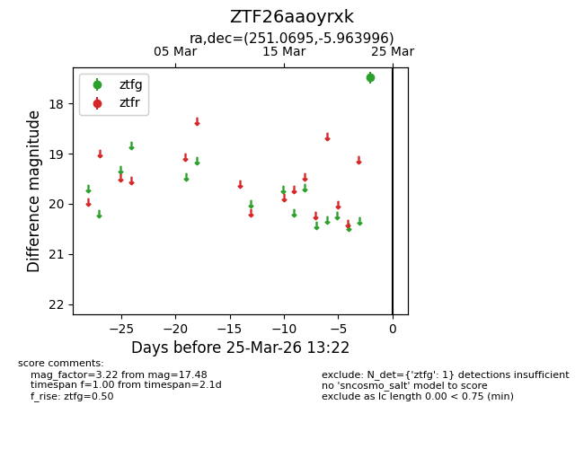
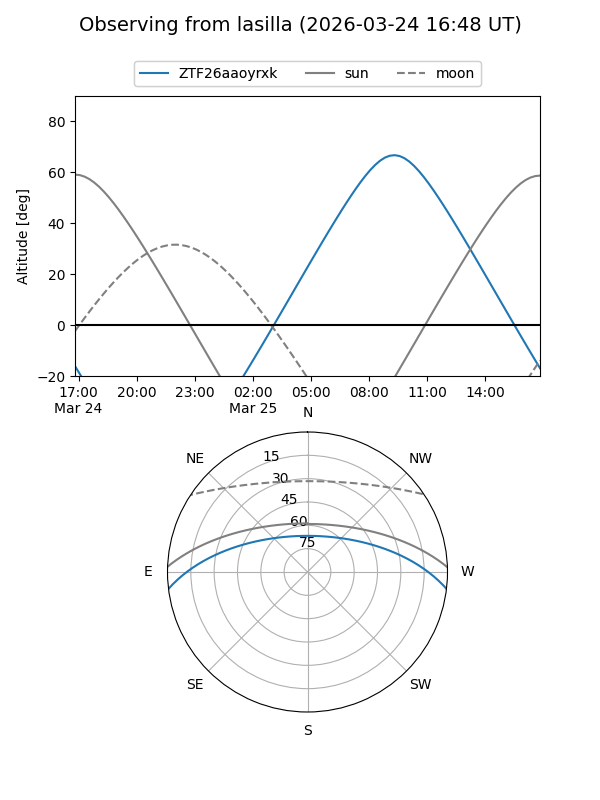
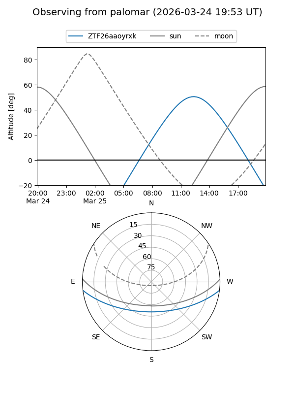

ZTF26aaoyrxk
Target ZTF26aaoyrxk at 2026-03-25 13:25
Aliases and brokers:
FINK: link
Lasair: link
ALeRCE: link
alt names
ZTF26aaoyrxk (ztf,fink_ztf)
Coordinates:
equatorial (ra, dec) = 251.0695,-5.96400
equatorial (HMS+DMS) = 16:44:16.68,-05:57:50.38
galactic (l, b) = (11.5269,+24.76743)
Flags:
Photometry:
last ztfg=17.48
1 ztfg detections
Lightcurve

Visibility


Additional plots